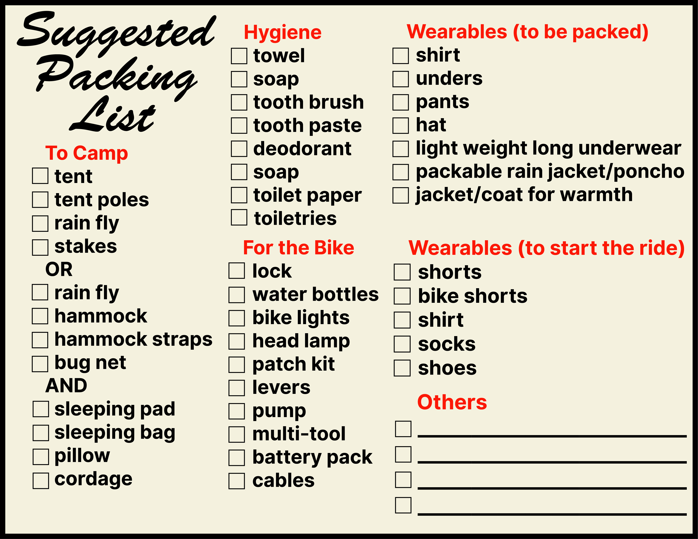

Sign up for The 2026 Ramble here.
★ ★ ★
Pre-Ride
Friday, October 23 – Saturday, October 24
All day arrival for those coming into town early. Check in at 413 West Ash (HomeBase). Camping and floor space will be available.
Friday Evening – Meet at HomeBase. Ride about town, various stops and hangs at One to One Print Shop. Food, drinks and big hangs abound.
Saturday Day – Community breakfast and local trail exploration before the ride kickoff, or lazing about until the ride begins. Enjoy it!
The Ride
Saturday, October 24 – Sunday, October 25
Head Out: 12:30pm – Flat Branch Park/4th and Cherry
Riding To: Hartsburg, MO with stops along the way including:
Hindman Junction – Where the MKT and Katy Trail intersect
Cooper's Landing – Food, drinks and entertainment before nightfall.
Hartsburg – Overnight free hammock/tent/ground camping in the city park, food, drinks and entertainment.
Post-Ride
Sunday, October 25
Head Back – Around 9am, return by 3pm. Breakfast (TBD) available 7am–9am.
Feel free to be on your travels upon return to HomeBase, or to relax and recombobulate as needed. We're glad to have you!
Text 573-305-0908 (Johnathon) with any questions you may have!
